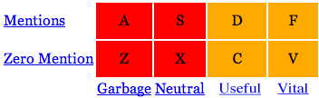
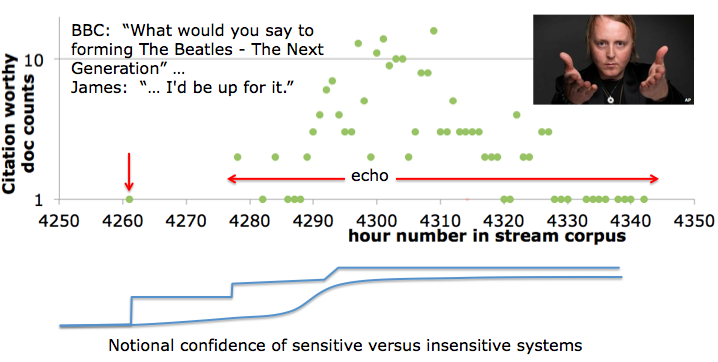

This page is an archival record of the second year of the KBA track, which ran in NIST's TREC 2013. See the 2014 task.
Update
KBA 2013 was a great success. See summary of results:KBA 2013 Big Picture:
KBA systems must filter a large stream of text to find documents that can help update a knowledge base like Wikipedia. This requires systems to disambiguate entity mentions and filter documents to satisfy particular information needs.
KBA 2013 has two tasks:
- CCR: Cumulative Citation Recommendation (same as KBA 2012)
- Given a fixed list of target entities from Wikipedia and Twitter, filter documents worth citing in a profile of the entity, e.g. their Wikipedia or Freebase article.
- CCR has no requirement for novelty or salience.
- SSF: Streaming Slot Filling (new in KBA 2013)
- Given a slot for each of the target entities, detect changes to the slot value, such as location of next performance or founder of ____.
- The metric will favor systems that most closely match the timeline of slot values created by the NIST assessors.
See KBA 2012 Overview slides and KBA 2013 Preview slides.
See TREC KBA 2012 Track Overview paper (notebook version)
The hourly structure of the KBA stream corpus allows entities to evolve.
Unlike traditional filter topics defined by a list of keyword queries, entities are described by semi-structured articles in a knowledge base (KB) like Wikipedia, Facebook, LinkedIn, Crunchbase, etc. Such KB articles are more human-centric and also provide richer material for modeling.
Systems in KBA 2012 used a variety of approaches. Given the large training set, machine learning approaches that used just words and phrases as features were above the median in CCR. Given the rich structure of links in WP, mining rich features from the KB also performed well. Several teams explored temporality within the CCR context. In KBA 2013, we hope to see combinations of these ideas and new ones.
The new SSF task focuses more on applying natural language understanding in the stream filtering context.
Terminology changes from KBA 2012
- "relevance score" --> "confidence score," as was always the documented meaning of the score in the run submissions
- "central rating" --> "vital rating," as is more common
- "relevant rating" --> "useful rating," as is more common
Timeline leading up to TREC 2013 conference
| now: | NIST accepting KBA Data Access Agreements. |
| now: | KBA 2012 corpus and annotation from KBA 2012 available for download. |
| March: | Expanded 2013 corpus available for download. |
| March: | pre-hoc annotation for CCR conducted at NIST. |
| early April: | queries and training data released for both CCR and SSF. |
|
|
First SSF Deadline for submitting runs. |
| CCR KBX Deadline for submitting runs,so KBP can use KBA CCR runs for Cold Start input corpora. | |
| June 17-July 17: | post-hoc annotation for SSF conducted at NIST. |
|
|
Final Deadline to submit runs for SSF and CCR. |
| October: | Submission deadline for TREC Notebook papers. |
| November: | TREC Conference in Gaithersburg, MD.
Plenary speakers: TBD |
kba-ccr-2013 Cumulative Citation Recommendation
This repeats the KBA 2012 task with a much richer set of target entities and refined definitions of relevance rating levels. Systems should aim to replicate the "vital" judgment for entire documents, i.e. to propose documents that a human would want to cite in updating the Wikipedia article for the target entity. We have revised the run submission format to allow systems to indicate other relevance rating levels. This makes the run submission format the same as the training data.
Systems must iterate over the hourly directories of data in chronological order, hour by hour. Systems must not go back to promote documents using information from the future. There is no limit on the number of documents that may be included in a run submission.
We are hand-picking a set of ~600 people and organizations from Wikipedia and Twitter. We used several clusters of related entities from small towns and other types of communities. We focused on entities with complex link graphs of relationships with other active entities. For example, Phyllis Lambert.
kba-ccr-2013 has no novelty requirement, so if Justin Bieber were a target entity (he is not) and he happens to produce a new album, and two hundred StreamItems (documents) announce it, then in principle they are all citation worthy -- they all contain information that pertains to building a profile.
The hard part of CCR is modeling the notion of citation worthiness. In 2012, the assessors were instructed to treat the highest relevance rating level (then called "central") as meaning that one would cite the text in the Wikipedia article for the taret entity.
For 2013, we have revised the instructions to the assessors to make a better distinction between two different forms of relevance or citation-worthiness when building a profile:
- useful when creating a profile from scratch
- vital when maintaining an already up-to-date profile
The NIST assessors were instructed to approach each entity as though they were building a profile or dossier about that entity. Since some entities are in Wikipedia, the assessors mental model of a profile should look like a completed Wikipedia article. Other entities are less well known, and might not meet the notoriety requirements of Wikipedia -- in these cases, the NIST assessors were instructed to consider a profile appropriate for the entity, such as a Freebase article. The profile and its content should match the entity.
Using a high-recall (low-precision) system based on name matching, we fed a subset of the corpus to NIST annotators to judge. Participants' systems will probably find some true positive results that we did not send to the annotators in the original annotation effort. See interannotator agreement and recall scores for KBA 2012.
All of the filter topics and annotations from the beginning of the stream will be available to all teams at the start of the evaluation.
The entities are specified by their "target_id" URL in either Wikipedia or in twitter.
For KBA 2013, we drop the earlier notion of a "KB snapshot time." The "no future info" prescription still holds: for any given date hour, systems may only access information about the entity from the past. Systems that use Twitter or Wikipedia APIs to access information about the entity must filter the data from those APIs to only consider information that was available before the date_hour being processed.
It is possible for a document to be citation worthy for multiple target entities.
As with KBA 2012, CCR is justed pre-hoc, and provide all the annotation for an early portion of the stream corpus as training data for all the pariticpants in TREC 2013.
Only those documents that have 'clean_visible' text are candidates for the task. Other documents will not be judged, although they may be included in the truth data if the timestamp, URL, and/or string matching against other fields indicate that they contain the same content. Further, the NIST Assessors were instructed to discard any documents that were not primarily English.
The letters asdfzxcv are keystrokes for rapid entry.
Counts from KBA 2012 annotation:
| Mentions | 7991 | 3862 | 13971 | 7806 |
| Zero Mentions | 15367 | 163 | 61 | 0 |
| garbage | neutral | useful | vital |
Rows:
- Mentions: Document explicitly mentions target entity, such as full name, partial name, nickname, pseodonym, title, stage name.
- Zero Mentions: Document does not directly mention target. Could still be relevant, e.g. metonymic references like "this administration" --> "Obama". See also synecdoche. A document could also be relevant to the target entity through relation to entities mentioned in the document -- apply this test question: can I learn something from this document about the target entity using whatever other information I have about the entity? From manual investigation, we have found that for citations in Category:Living_people, only one-in-five are non-mentioning, and most of those mention another entity that could (or should) have a KB entry. These non-mentioning citations would usually be better used as citations on that other entity. Thus, almost all useful and vital documents are mentioning.
- Garbage: no information about target entity, e.g. target's name appears in chrome without any context. Could be "mentioning" but not informative, e.g. spam, chrome link on side of article.
- Neutral: informative but not citable, e.g. tertiary source like WP article itself not relevant. The boundary between garbage and neutral is typified by mentioning documents that provide very little info about entity, e.g. entity name used in product name or a passing reference like "this books plot reminds me of Alexander McCall Smith." Assessors must make a subjective judgment based on the context and the particular entity whether such texts are neutral or garbage.
- Useful: possibly citable but not timely, e.g. background bio, primary or secondary source. This might be useful if we were building the KB entry from scratch, but since we're updating an existing entry, it's merely useful not vital. The boundary between neutral and useful is typified by documents that provide only a little biographical detail about an entity, such as "Curduroy Mansions, by Alex McCall-Smith, is one the best seller list." Assessors must judge whether such content would be useful as a citable reference in the initial compilation of the profile for this particular entity.
- Vital: timely info about the entity's current state, actions, or situation. This would motivate a change to an already up-to-date knowledge base article. Special cases include a deceased entity, in which case the entity's estate is the current embodiment of the entity and changes to the estate might trigger vital updates. The boundary between useful and vital is typified by documents in which the temporal context is vague or requires thought to ascertain, such as a job posting by an organization in which the assessor can deduce that the date on the job posting implies that the organization recently changed by opening the position. Assessors must judge whether such content is timeless (therefore Useful) or happening in time (therefore Vital).
kba-ssf-2013 Streaming Slot Filling
SSF builds on CCR by specifying a slot name for each entity. The slot names will come from a fixed inventory based on the TAC KBP 2013 ontology. We will pick interesting slots that change regularly, e.g. the next location that a musician will perform or the sender/receiver of financial transactions involving the target entity.
The SSF query entities will be the same as CCR plus collections of these entities --- we may define additional group-like entities that emerge as cohesive named entities from the CCR targets.
The ground truth data generated post-hoc by judging pooled results from teams will be structured as a timeline of acceptable slot values for each hour. The slot values will be defined by equivalence classes of strings from the corpus that answer the question. For example, (James_McCartney, founderOf, Beatles2) where founderOf is the slot name and Beatles2 points to a set of equivalent strings, such as "The Beatles - The Next Generation" and "The Beatles II".
The run submission format and details of the metric for SSF is under development. It will favor systems that most closely match the changes in the ground truth timeline of slot values. This will probably require that the run submission format distinguish when a system is asserting the appearance of a new equivalence class of values.
We will probably require that systems produce only one slot value per hour per entity.
For example, an SSF system should catch the first appearance of the new information that James McCartney might start a new band called Beatles 2 -- The Next Generation, which the sons of each of the original Beatles' members, who each happen to play his father's instrument. A good SSF system will figure out that the subsequent echo is redundant: 
Examples of redudant texts in this echo are: COREFerence resolution, EQUIVilance, RELation, NOVelty
All of these are examples of detecting REDUNDANCY:
Doc 1) Nothing may be sacred after all: Sir Paul McCartney's son James is interested in starting a second-generation Beatles band with John Lennon's son Sean, George Harrison's son Dhani and Ringo Starr's son Zak.
Doc 2) UPDATE: James McCartney has clarified his comments on his Facebook page: Hi Everyone...well, looks like quite some attention being given to my BBC interview! Honestly, I was just thinking out loud about playing with Beatles family friends, nothing more. My band’s going to be on tour in the UK and US for most of this year, and the shows are going great! I'm so grateful…Lots of love to you all...!
Doc 3) It is 42 years since the world's most famous band broke up, following an acrimonious split between former best friends Paul McCartney and John Lennon. Now, however, Sir Paul’s only son James has revealed a new group featuring the offspring of the Fab Four could become a reality. James -- who was last night due to follow in The Beatles’ footsteps by playing the Cavern Club in Liverpool ...
Metrics: The primary metric for KBA CCR is maximum macro-averaged F_1 measure. F_1 is a function of confidence cutoff. By sweeping the cutoff, we obtain a range of precision (P) & recall (R) scores for each target entity. After averaging P and R across the set of target queries, we then compute F_1 at each confidence threshold and take the maximum F_1 as the single score for the system. The SSF metric will be as similar as possible.
We are also interested in ranking measures and temporally oriented measures, and may add other secondary metrics.
External Information: teams can use external info that entered the world before the given hour being processed. Teams must describe such external data in their run submission descriptions.
KBX
As an incentive to submit your CCR runs by the Regular Deadline we have coordinated with TAC KBP for an exciting joint experiment called "KBX"
The KBP organizers will endeavor to use top scoring KBA runs submitted by the Regular Deadline as input corpora to KBP Cold Start.
If feasible, KBX will evaluate end-to-end performance of combining KBA+KBX algorithms that filter a stream of ~109 documents and emit a knowledge base about a specific group of related entities.
Note: KBX is an experiment. It might get snarled up in a few ways: the KBA runs might not have enough "small town" entities and TAC-style relations to meet Cold Start's needs, or it might have so many documents that it exceeds the KBP assessor budget. Also, we are still structuring its scientific questions and metrics.
That said, neat things often appear at interfaces, so we feel compelled to try. If you feel similarly compelled, then submit KBA CCR runs by the Regular Deadline in June.
Coping with the Big Data
While the corpus is large, each individual hour is only 10^5 docs. Teams have exploited this in several ways, including:
- Pre-indexing many hourly chunks in a search engine like indri, solr, elasticsearch, and then simulate an hourly stream by issuing queries restricted to each hour in sequential order. In implementing such an approach, one should avoid using future information by configuring ranking algorithms to not not use statistics future documents.
- Batch processing: you can iterate over the corpus as a sequence of ~4300 batches. This can be implemented using a MapReduce framework like Hadoop or even BashReduce.
Submissions to KBA are gzipped text files in the format below. The first line must be a comment containing a JSON string in the filter-run.json schema. Assertions consist of seven fields with separated by whitespace.
Be sure your file name ends with ".gz".
Comment lines must start with '#'. All comment lines after the first line are ignored.
In order to attend the TREC conference, you must submit a run. To send your CCR runs to NIST, verify its format using the scripts that will be provided by NIST. Last years verification scripts are here: http://trec.nist.gov/act_part/scripts/13.scripts/check_kba.pl before uploading to https://ir.nist.gov/trecsubmit/kba.html
Example run submission generated by this toy KBA system written in python that generates both SSF and CCR example output.
#{"run_type": "automatic", "poc_email": "trec-kba@googlegroups.com", "team_id": "CompInsights", "topic_set_id": "kba-2013-ccr-and-ssf", "corpus_id": "kba-streamcorpus-2013-v0_2_0", "$schema": "http://trec-kba.org/schemas/v1.1/filter-run.json", "team_name": "Computable Insights", "system_description_short": "relevance=2, exact name match, longest sentence slot fills", "system_description": "Entity title strings are used as surface form names, then any document containing one of the surface form names is ranked vital with confidence proportional to length of surface form name, and the longest sentence containing the longest surface form name is treated as a slot fill for all slot types for the given entity type.", "task_id": "kba-ccr-2013", "poc_name": "TREC KBA Organizers", "run_info": {"num_entities": 170, "num_stream_hours": 8951}, "system_id": "toy_1"}
CompInsights toy_1 1317995861-4c6376217ea27bb954f96164c7cdc8ab http://en.wikipedia.org/wiki/The_Ritz_Apartment_(Ocala,_Florida) 1000 2 1 2011-10-07-14 Affiliate 19ed38ac70555a9f1bbf26feb79764bf 1057-1263
CompInsights toy_1 1317995861-4c6376217ea27bb954f96164c7cdc8ab http://en.wikipedia.org/wiki/The_Ritz_Apartment_(Ocala,_Florida) 1000 2 1 2011-10-07-14 Contact_Meet_Entity 19ed38ac70555a9f1bbf26feb79764bf 1057-1263
CompInsights toy_1 1317995861-4c6376217ea27bb954f96164c7cdc8ab http://en.wikipedia.org/wiki/Appleton_Museum_of_Art 1000 2 1 2011-10-07-14 Affiliate 19ed38ac70555a9f1bbf26feb79764bf 1057-1263
CompInsights toy_1 1317995861-4c6376217ea27bb954f96164c7cdc8ab http://en.wikipedia.org/wiki/Appleton_Museum_of_Art 1000 2 1 2011-10-07-14 Contact_Meet_Entity 19ed38ac70555a9f1bbf26feb79764bf 1057-1263
CompInsights toy_1 1317995861-4c6376217ea27bb954f96164c7cdc8ab http://en.wikipedia.org/wiki/Bill_Coen 1000 2 1 2011-10-07-14 Affiliate fc9c67b4ca0bdeaf2cac34c3d6edb192 0-303
CompInsights toy_1 1317995861-4c6376217ea27bb954f96164c7cdc8ab http://en.wikipedia.org/wiki/Bill_Coen 1000 2 1 2011-10-07-14 AssociateOf fc9c67b4ca0bdeaf2cac34c3d6edb192 0-303
CompInsights toy_1 1317995861-4c6376217ea27bb954f96164c7cdc8ab http://en.wikipedia.org/wiki/Bill_Coen 1000 2 1 2011-10-07-14 Contact_Meet_PlaceTime fc9c67b4ca0bdeaf2cac34c3d6edb192 0-303
CompInsights toy_1 1317995861-4c6376217ea27bb954f96164c7cdc8ab http://en.wikipedia.org/wiki/Bill_Coen 1000 2 1 2011-10-07-14 AwardsWon fc9c67b4ca0bdeaf2cac34c3d6edb192 0-303
snip...
#{
# "$schema": "http://trec-kba.org/schemas/v1.1/filter-run.json",
# "corpus_id": "kba-streamcorpus-2013-v0_2_0",
# "poc_email": "trec-kba@googlegroups.com",
# "poc_name": "TREC KBA Organizers",
# "run_info": {
# "elapsed_time": 4.623950004577637,
# "num_entities": 170,
# "num_entity_doc_compares": 170000,
# "num_filter_results": 16458,
# "num_stream_hours": 3
# },
# "run_type": "automatic",
# "system_description": "Entity title strings are used as surface form names, then any document containing one of the surface form names is ranked vital with confidence proportional to length of surface form name, and the longest sentence containing the longest surface form name is treated as a slot fill for all slot types for the given entity type.",
# "system_description_short": "relevance=2, exact name match, longest sentence slot fills",
# "system_id": "toy_1",
# "task_id": "kba-ssf-2013",
# "team_id": "CompInsights",
# "team_name": "Computable Insights",
# "topic_set_id": "kba-2013-ccr-and-ssf"
#}
where:
- first column: your team_id
- second column: your system_id. This provides a unique identifier for the submission when combined with your team_id.
- third column: official document identifier of the retrieved document, which is always the stream_id in the kba-stream-corpus-2013.
- fourth column: unique identifier for the topic, which for kba-ccr-2012 is the urlname of the entity in the January 2012 snapshot of the English Wikipedia..
- fifth column: confidence score, which must be normalized to be less than or equal to 1000 and greater than 0, i.e. you can think of them as floating point numbers between zero and one that we present as integer thousandths.
confidence ∈ (0, 1000] and confidence ∈ 𝐙
- sixth column: relevance rating levelinteger in [-1, 0, 1, 2] corresponding to relevance judgment in ['garbage', 'neutral', 'useful', 'vital']. SSF run submissions can provide this field, however the scoring tool will only consider lines that have "2" (vital) in this field. CCR run submissions must provide this field, and scoring tool considers both 'useful' and 'vital'.
- seventh column: contains mention integer in [0, 1], which is boolean indicating whether the document contained a mention of the entity or not.
- eighth column: date-hour string corresponds to the directory name containing the chunk file that contains the document, e.g. '2012-04-04-04'.
- ninth column: slot name from the TAC KBP slot ontology. Used in SSF. Runs for CCR should use 'NULL' in this field. This field most have a string from the list below. Optionally, this field may contain a second string separated from the first by a colon ":", where the second string is a system-selected name for a sub-type or variant of the target slot. This will not be used in scoring and is provided solely for the purpose of allowing systems to output more information about the algorithm's perspective on the slot. This field must not contain any spaces.
- tenth column: slot value equivalence class name generated by system. Used in SSF. Runs for CCR should use '-1' in this field.
- eleventh column: inclusive byte range, e.g. "23-27" specifies five bytes. Byte numbering is zero-based. Used in SSF. Runs for CCR should use '0-0' in this field.
Slot Names:
Each entity is one of these three types:
- Facility (FAC)
- Person (PER)
- Organization (ORG)
The entity_type determines the target slots to fill:
- PER:
- Affiliate
- AssociateOf
- Contact_Meet_PlaceTime
- AwardsWon
- DateOfDeath
- CauseOfDeath
- Titles
- FounderOf
- EmployeeOf
- FAC:
- Affiliate
- Contact_Meet_Entity
- ORG:
- Affiliate
- TopMembers
- FoundedBy
automatic versus manual: As is standard for TREC tasks, you should design and implement your system without studying the particular topics and training data. The purpose of the training data is to allow you to automatically train your system, not manually tune/tweak/patch your system for these particular topics. After you generate an automatic run, it is probably quite fruitful to manually examine the training data and conceive of improvements for manual runs.
We want to hear about your insights, and please consider describing your work in a poster at the TREC conference and/or a technical report in the TREC proceedings.